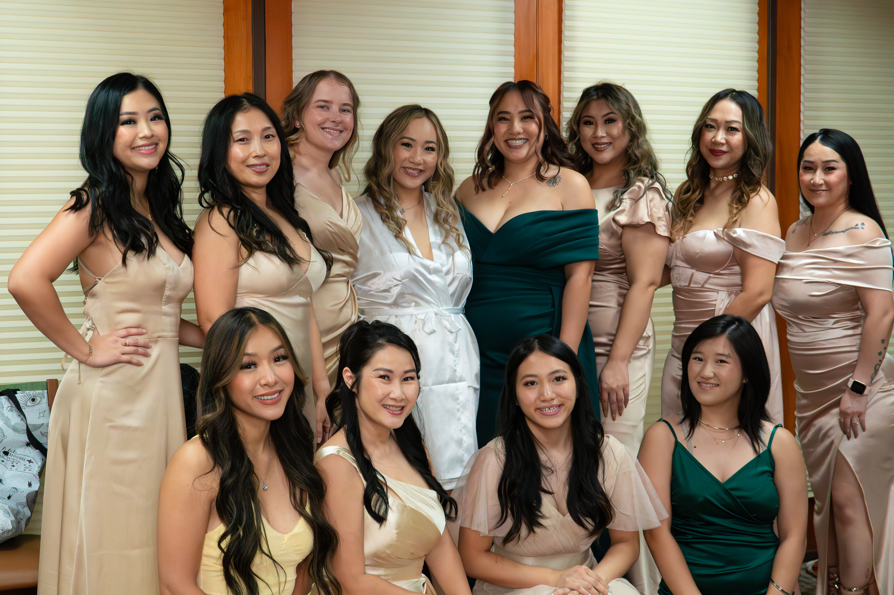
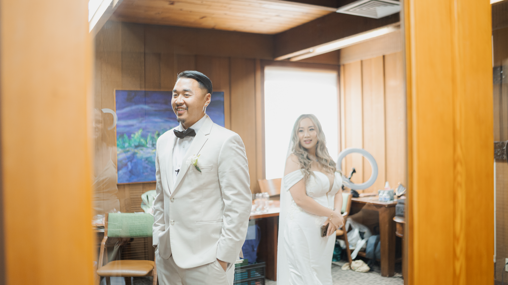
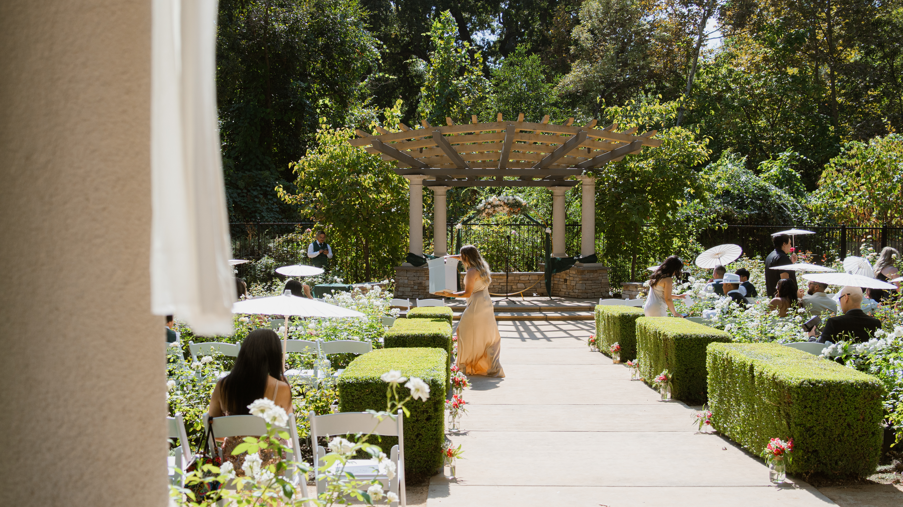
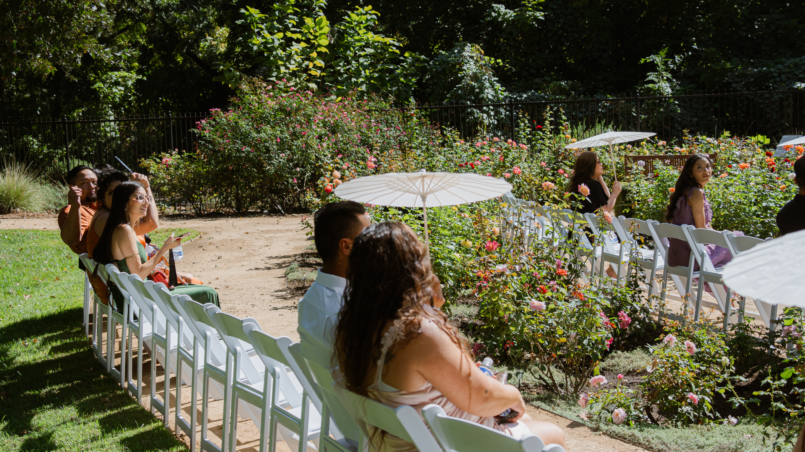
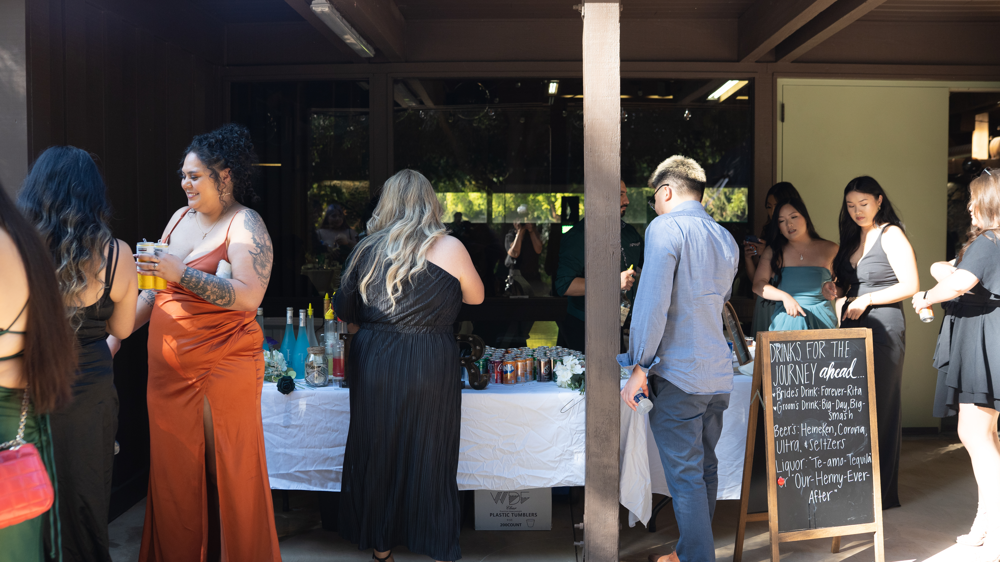
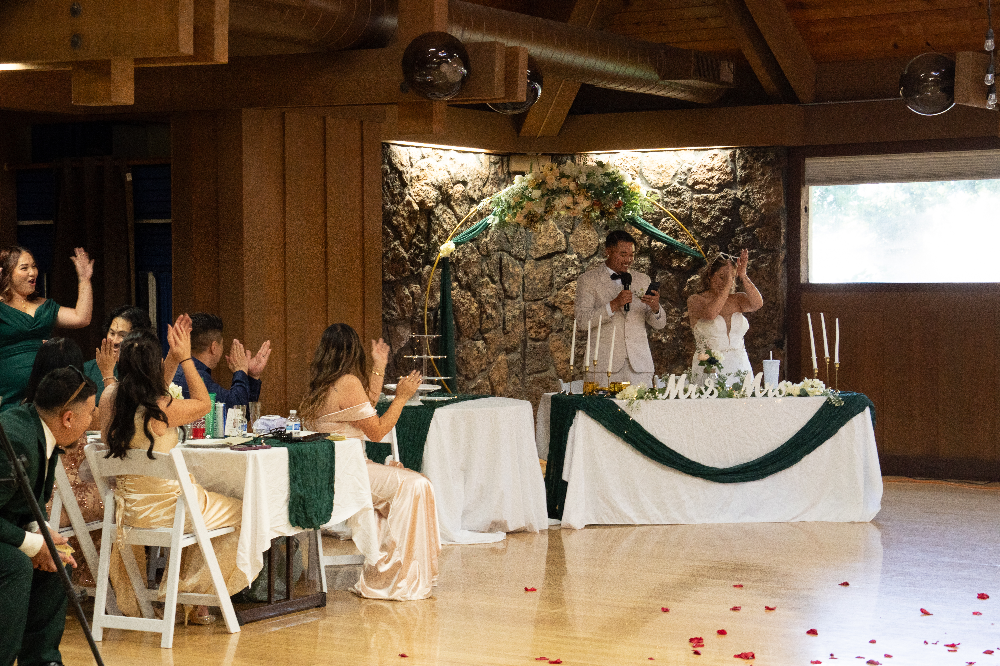
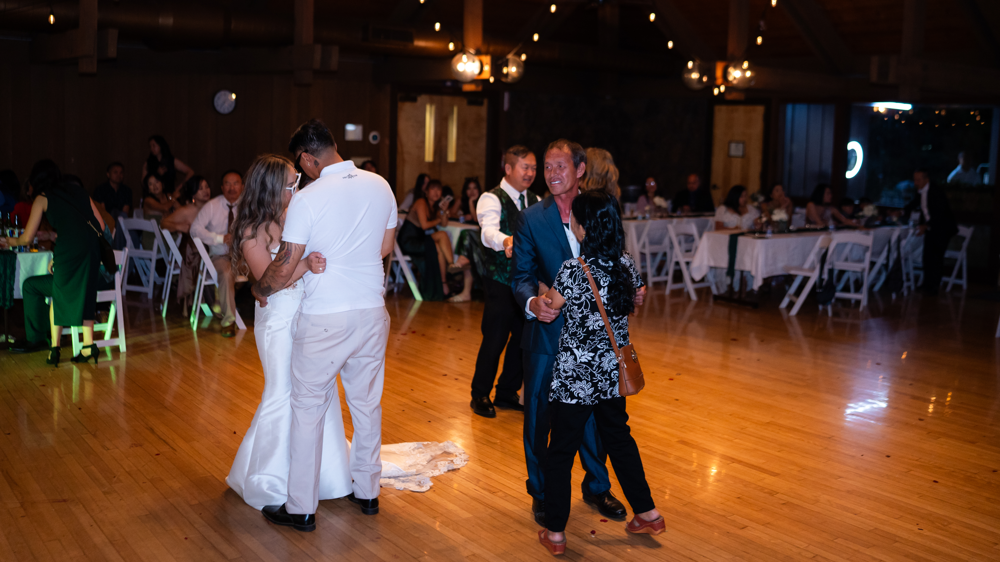
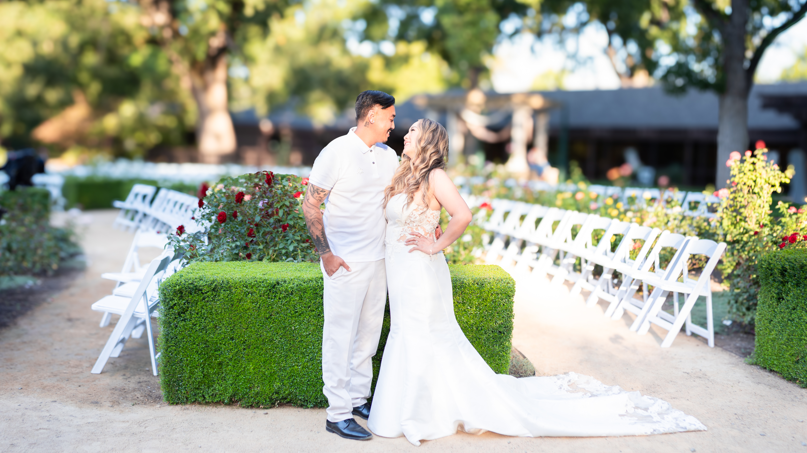
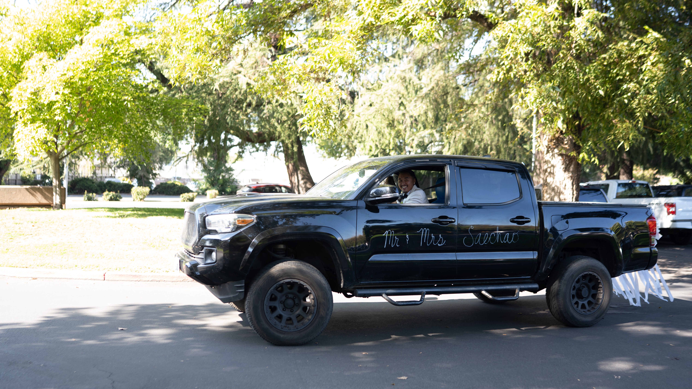
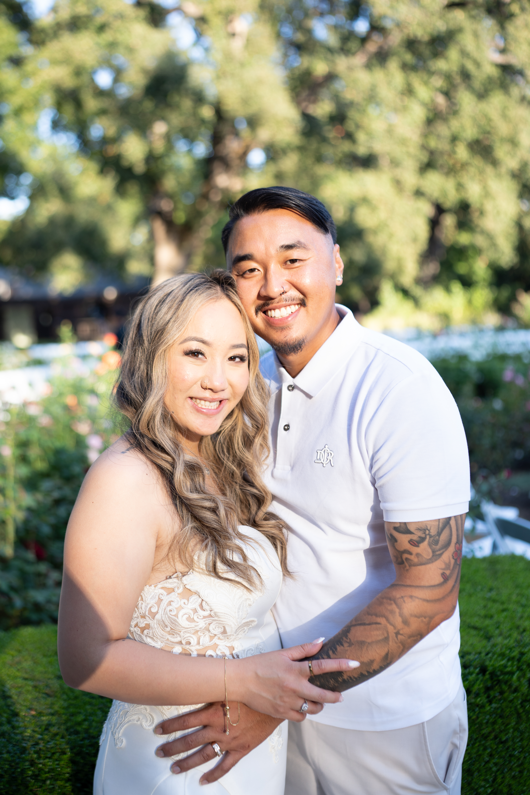

Story 02 · Heaven & Timmy Wedding 2025
Garden Celebration
A romantic garden celebration captured with documentary intimacy and cinematic atmosphere. From quiet morning details to golden hour romance, this story celebrates the full arc of a day filled with connection, joy, and love.











How to fill the spaces: upload JPG photos into your GitHub images folder using the exact filenames shown in each box. The boxes will automatically become photographs.